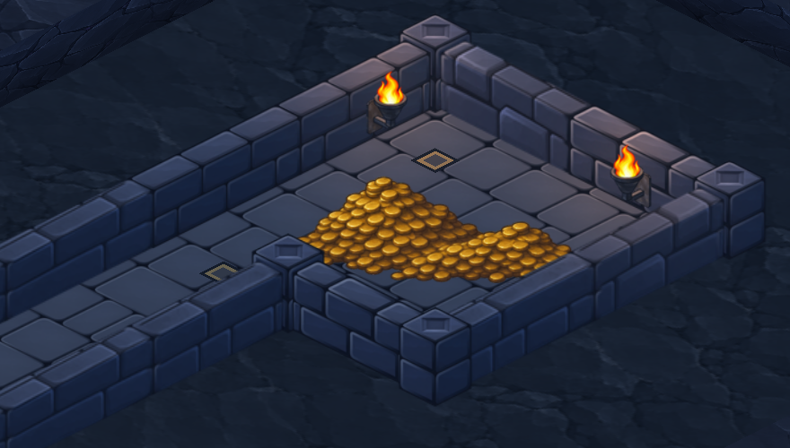
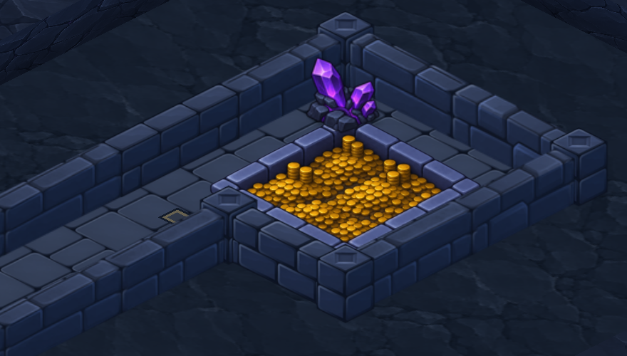

A · L’Éboulis d’or L’or s’est accumulé directement sur les dalles. Les deux torches éclairent la pierre et un losange de bronze marque le seuil.
B · La Fosse de la dîme Une assise de pierre suit le contour du trésor. Quelques piles plus hautes en émergent, et un cristal violet marque l’angle du fond.